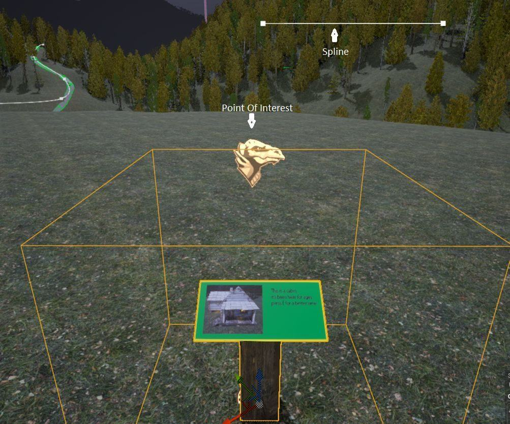
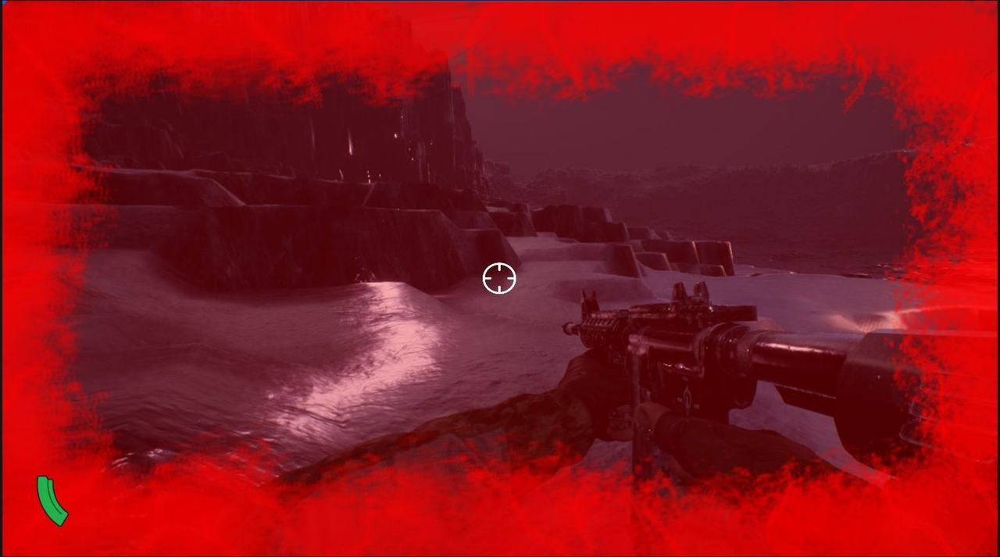
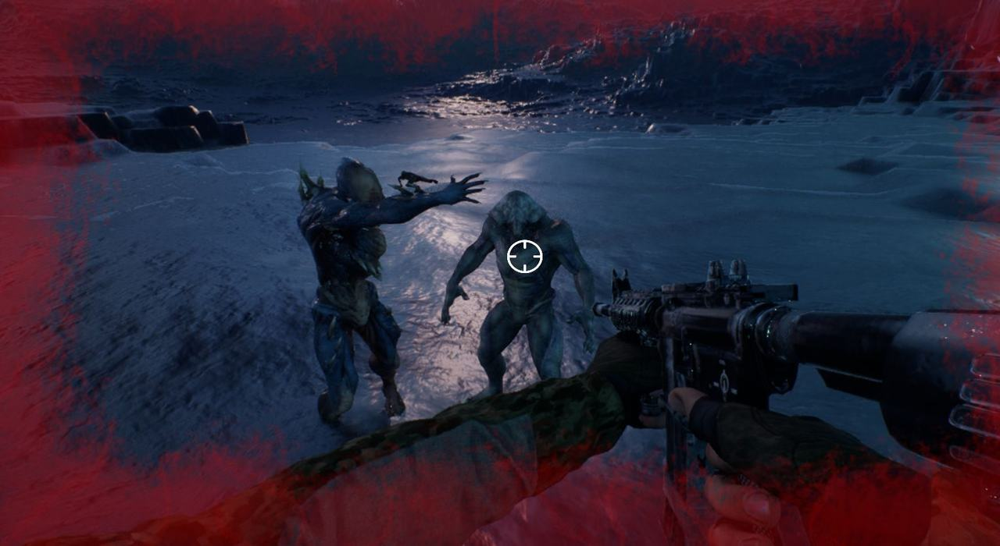
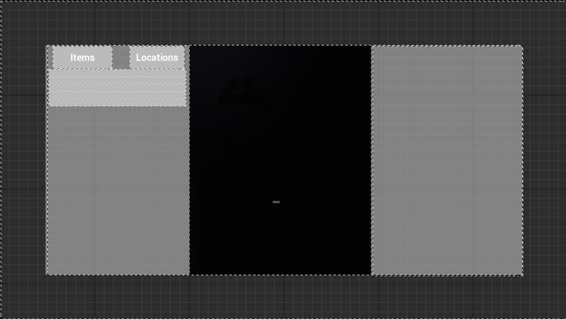
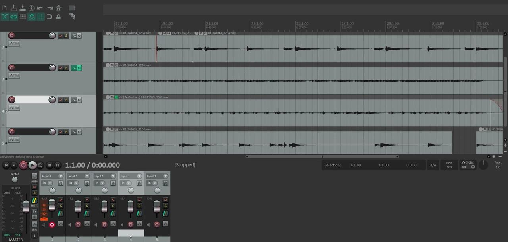

2024 · 项目
Stormhaven
在暴风雨的自然公园里探索，让"走路模拟器"变成有机制的体验
六人团队在 Unreal Engine 上的续作式项目：以打磨为目标，为既有原型补上探索功能（Vista 电影镜头、快速旅行网络）、扩展 FPS 系统与叙事。我负责 FPS 系统的整体强化——HUD 重设计、血腥屏效果、射击与检视武器动画，以及敌人 AI 行为与音效。
- 担任
- Combat Designer（FPS 系统、HUD、敌人 AI）
- 团队
- 6 人团队（客户：Tristan Leslie / Grimforge Games）
- 周期
- 2024.06 – 2024.10
- 引擎 / 工具
- Unreal Engine（蓝图）
- 类型
- 第一人称探索 / FPS · Unreal
- 状态
- 已交付；客户将用它申请后续开发资金

Overview
项目概述
Stormhaven 是一款探索向的第一人称游戏：玩家在一片暴风雨天气的自然公园中探索， 寻找散落在地图上的物品与地点。我们拿到的起点是上学期自己做的原型， 这一学期的工作是把之前超出范围的功能补齐，并且以打磨为重点。
本项目的代码仓库在坎特伯雷大学内网的 EngGit（需校内账号），未公开到 GitHub。 原始工程与美术资产由客户 Grimforge Games 提供，出于保护客户资产的考虑不整体开源。
客户交给我们的两个问题
如果玩家触发传送门开启，叙事能否为随后发生的事件提供足够的上下文？
能否围绕探索做出有参与感的玩法，而不是又一款"走路模拟器"？
这两个问题是整个学期的验收标准——我们做的每一个系统都要能回答其中之一。
项目设置
| 项目 | 内容 |
|---|---|
| 引擎 | Unreal Engine，全蓝图开发（团队无 C++ 经验，客户也要求用 UE） |
| 任务管理 | Jira（沿用上学期，效果很好）+ 导出到 Excel 便于总览 |
| 沟通 | Discord + 每周两次线下会议 |
| 版本控制 | GitLab。免费版不支持文件锁定，因此我们尽量模块化，并在 Discord 里提前声明"某个大文件正在改"，以降低合并冲突 |
| 周期 | 2024.06 – 2024.10，3 个里程碑（每两周一个），便于中途重新划范围 |
| 客户资产 | 复用 Tristan 提供的逻辑与对象架构系统，以及他提供的资产以保证画面质量 |
团队
- Eli Razem — 叙事设计（同时负责场景清理与通路）
- Jake Genet — 音乐（兼职）
- Eve Cruickshank — 程序（GUI 开关逻辑与边界情况处理）
- James Millner — 程序（兴趣点：废弃营地、山顶瞭望塔、矿洞隐藏剧情）
- Shawn Leung — 程序（日志 GUI、背包系统重做）
- Yufei Zhang — Combat Designer（FPS 系统强化、HUD、敌人 AI）
Objectives
项目目标
Vista Actor
可交互物件：触发一段沿 spline 的飞行镜头，高亮兴趣点，然后交还给玩家。做成可放置、可自定义的 Actor。
快速旅行
基于 spline 的可交互节点，沿路径快速移动玩家；一个 GUI 展示已解锁的路线与节点，并允许连续穿越多个节点抵达目标地点。
沉浸式 FPS
移除传统 FPS 的 GUI 元素，换成更沉浸的替代方案；同时强化 AI 行为与动画，让敌人显得更有威胁、更可信。
叙事
用物品与地点撑起 Stormhaven 的背景世界，并用一本"日志"记录它们；日志同时揭示玩家所扮演角色的信息。也包括对既有叙事工具（音乐、音效）的整理与扩展。
FPS System
我的工作：FPS 系统强化
我负责把原有的 FPS 系统按明确需求优化。这条线分成三块：HUD、动画与武器表现、敌人 AI。
1. 重设计 FPS GUI
- 基于颜色的弹药状态 HUD：不再用数字读数，而是用颜色直接传达剩余弹药状态。
- 血腥屏效果：随着受到的伤害增加，屏幕逐渐变暗、被血色覆盖——血量不再是界面上的一个条，而是画面本身的状态。

这正好回应了客户"沉浸式 FPS"的要求：把信息从界面挪进画面，玩家不必低头看读数。
2. 射击与检视武器动画
- 加入射击动画与检视武器（weapon inspection）动画。
- 重点在于平滑的动画融合（animation integration），以及不产生冲突的资产迁移—— 后者在多人共用 Unreal 工程的团队里是个真实的坑。
3. 敌人 AI 行为与音效

- 改进 AI 行为，加入游荡（wander）与冲刺（sprint）两种行为。
- 为每种敌人配上各自独有的待机与攻击音效——让玩家能靠听觉辨识威胁类型。
时间线
我的这条工作线按以下顺序推进：GUI 改动 → 怪物补充 → 音效与动画 → 返工与修 bug。
Team Deliverables
团队其他交付物
日志 GUI 与叙事系统

- Shawn 开发的日志 GUI 用于记录关键玩法进度，灵感来自《Phasmophobia》的日志；背包系统为此做了重做。
- Eve 负责 GUI 开关的底层逻辑，并处理多个界面同时打开会互相冲突的边界情况。
- 叙事侧：日志记录玩家遇到的地点与物品，配套物品数据表与描述；用自定义数据类型构建了带目标与结果的叙事管理器。
- 后续目标：把日志页面和整体 GUI 做成更沉浸的形态。
Vista Actor 与快速旅行
开发方式是先按当前理解做原型，再向队友与客户收集反馈，然后按新需求修改。 快速旅行的需求是：一个选择地点的菜单、玩家的移动、以及移动过程的可见表现； 次要目标是模块化、更干净的 spline 与更智能的路径选择。
团队自评的问题：开发初期对系统缺乏足够的理解与投入，导致错失了一些打磨机会。
环境与兴趣点
- Eli 做了大量地形清理：增加通路、替换桥梁、生成草地。
- James 在第 4 周前完成了新的兴趣点：一座废弃营地、一处山顶瞭望塔。
- 矿洞被更新：如果玩家执行特定的一系列操作，会揭示隐藏的故事片段。
音乐

Playtest & Reflection
Playtest 与反思
Playtest 反馈
- 环境问题：部分区域的通路是断的（broken pathways）。
- 快速旅行问题：玩家预期移动更快甚至瞬时，实际的移动过程比预期慢。
- 叙事：相当一部分玩家并不知道游戏里存在叙事，因此它完全没有影响他们的体验——这是对我们叙事设计最直接的批评。
- 正面反馈：大多数人喜欢音乐与音频。
我们在为期一周的窗口里对 222 名学生做了 playtest，并重新申请了伦理审批， 随后把收集到的反馈纳入了最后一轮修改。
做得好的
- 范围划分与开发时间线更准：上学期的经验让我们能更准确地判断"在给定时间内我们能做什么、不能做什么"； 同时因为已经会做，能做的事反而更多。
- 沟通更好：每周 2 次以上会议；明确约定"谁有空余时间，谁就负责主动认领新的、合适的任务"； 管理更扁平，虽然仍有人承担了更多"管理"性质的职责。
问题
- 时间管理：职责互相冲突。
- Git 冲突：出现了少量冲突，但各方面都比上学期有改善。
- 与客户沟通不畅：我们和客户同时在做同一个系统，导致我们做出来的东西是冗余的。 这是这个项目里我认为最值得记住的一条教训——范围重叠比做错更浪费。
时间线
| 时间 | 里程碑 |
|---|---|
| 9 月 16 日 | 项目计划完成；为新机制搭建基础 |
| 9 月 23 日 | 细节工作；探索 Vista 与新的 GUI 元素实现 |
| 9 月 30 日 | 把新元素整合进主游戏与叙事 |
| 10 月 7 日 | 游戏可运行，需要打磨；申请 playtest 伦理审批 |
| 10 月 14 日 | 对 222 名学生 playtest 并打磨；重新申请伦理审批 |
| 10 月 23 日 | 项目完成，playtest 反馈已收集并纳入考虑 |
结论
我们的目标是达成既定的项目目标、做出可运行的体验原型、用 Jira 与过去的经验合理划定范围、 并完成 playtest 且落实反馈。最终结果是：全部达成。
- 叙事：创建了新的兴趣点；开发了日志与相关叙事内容。
- 探索网络：做出快速旅行系统并与日志整合；做出 Vista Actor。
- 打磨与后续：清理地形；实现新的兴趣点；进一步完善 FPS 与敌人 AI。
交付物是一款客户会用来申请后续开发资金的游戏，并且符合"沉浸而放松、同时能把故事讲出来"的要求。 做法上：把目标拆解到最小的任务、反复与客户确认他的构想是否被满足、用蓝图实现较复杂的目标、 并使用客户提供的资产来保证画面质量。
团队后续可能会在课余时间继续开发 Stormhaven，并获得 Tristan 的持续支持。